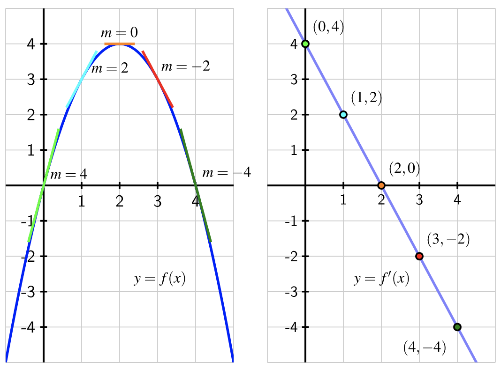

The derivative of the function \(f(x) = 4x-x^2\) is
\begin{equation*}
f\,'(x) = \lim_{h\to 0}\frac{f(x+h)-f(x)}{h} = \lim_{h\to 0}\frac{(4(x+h)-(x+h)^2)-(4x-x^2)}{h}\text{.}
\end{equation*}
The numerator simplifies as follows:
\begin{equation*}
\begin{aligned}(4(x+h)-(x+h)^2)-(4x-x^2) \amp = 4x+4h-a^2-2hx-h^2-4x+x^2\\ \amp = 4h-2hx-h^2 \end{aligned}
\end{equation*}
Then returning to the limit, we can factor an \(h\) in the numerator and cancel, before evaluating the limit:
\begin{equation*}
\lim_{h\to 0}\frac{4h-2hx-h^2}{h} = \lim_{h\to 0}\frac{h(4-2x-h)}{h} = \lim_{h\to 0} (4-2x-h) = 4-2x-0 = 4-2x
\end{equation*}
Thus we have \(f\,'(x) = 4-2x\text{.}\) As a function, \(f\,'(x)\) is defined for all values of \(x\text{.}\) Below, we see the graph of \(f(x)\) on the left, with several tangent lines, and the graph of \(f\,'(x)\) on the right, with several values corresponding to the marked tangent lines. We see that where \(f(x)\) is increasing, \(f\,'(x)\) is positive. Where \(f(x)\) is decreasing, \(f\,'(x)\) is negative. We also notice that the graph of \(f(x)\) has a tangent line at every point, so the graph of \(f\,'(x)\) has a value at every point, meaning that it is defined for all \(x\)-values. Indeed, the function \(f\,'(x) = 4-2x\) is defined for all real numbers \(x\text{.}\)
